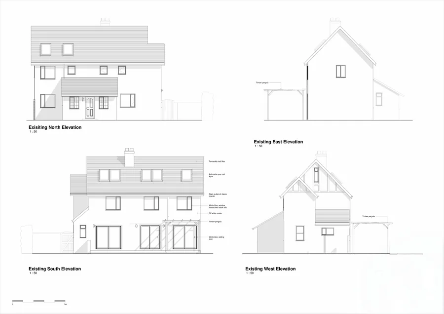
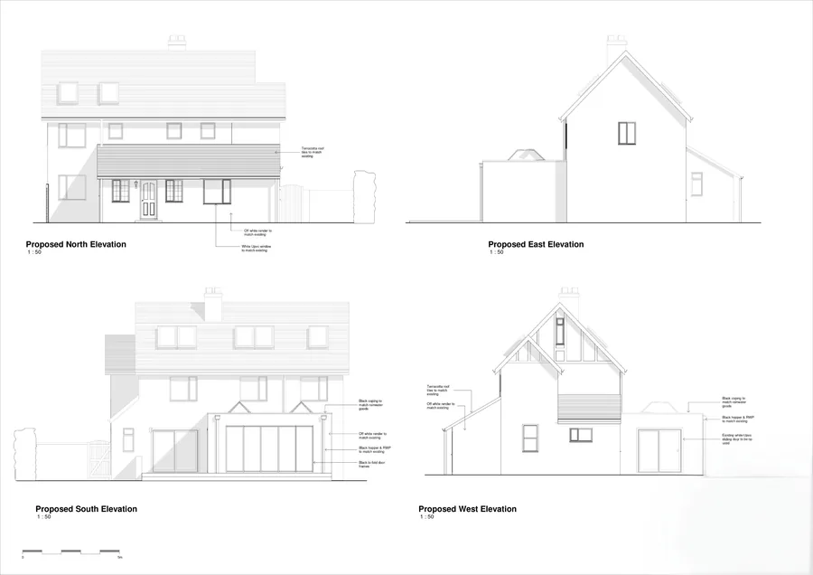
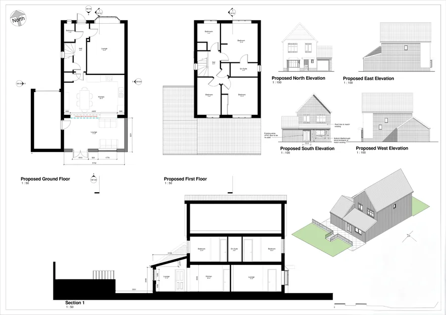
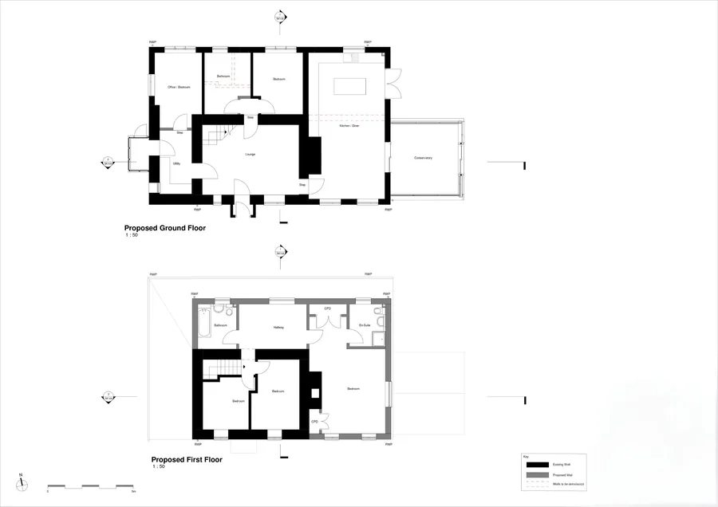
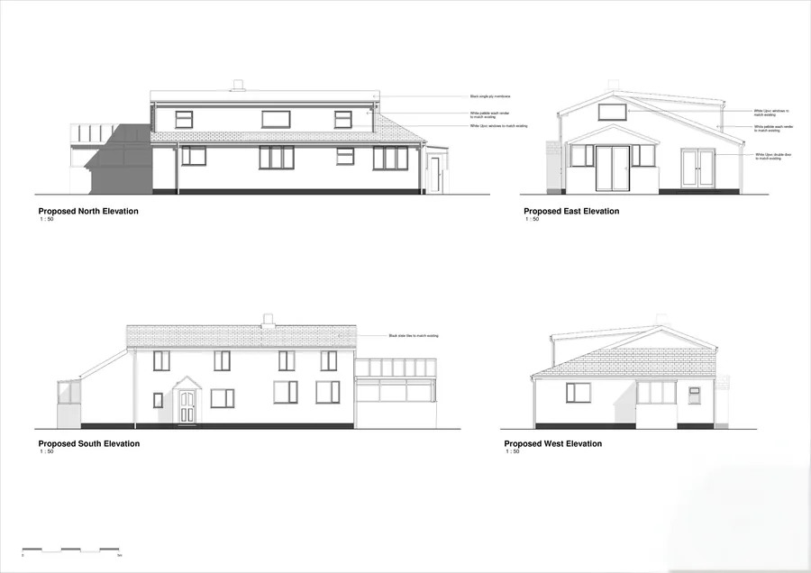
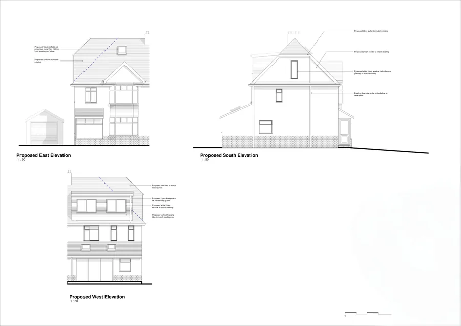
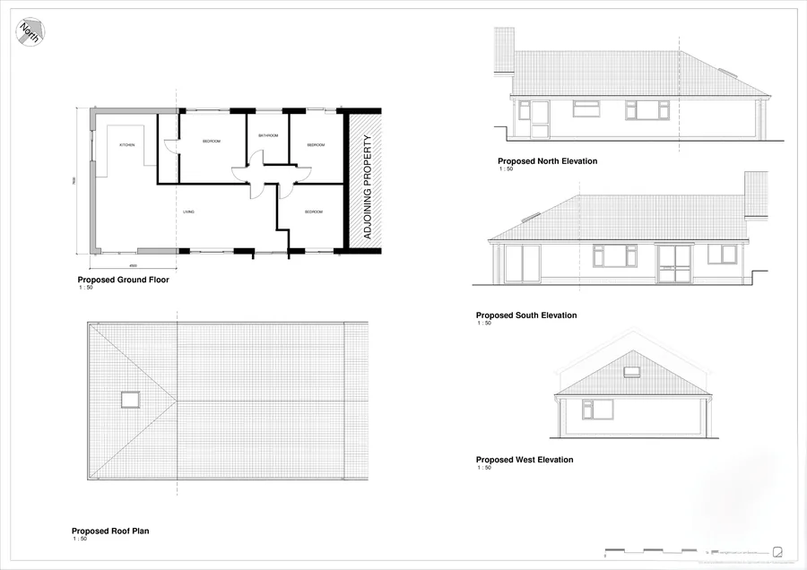
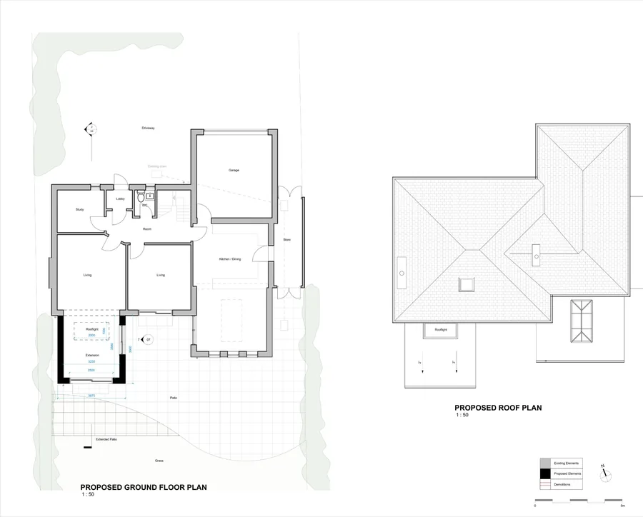
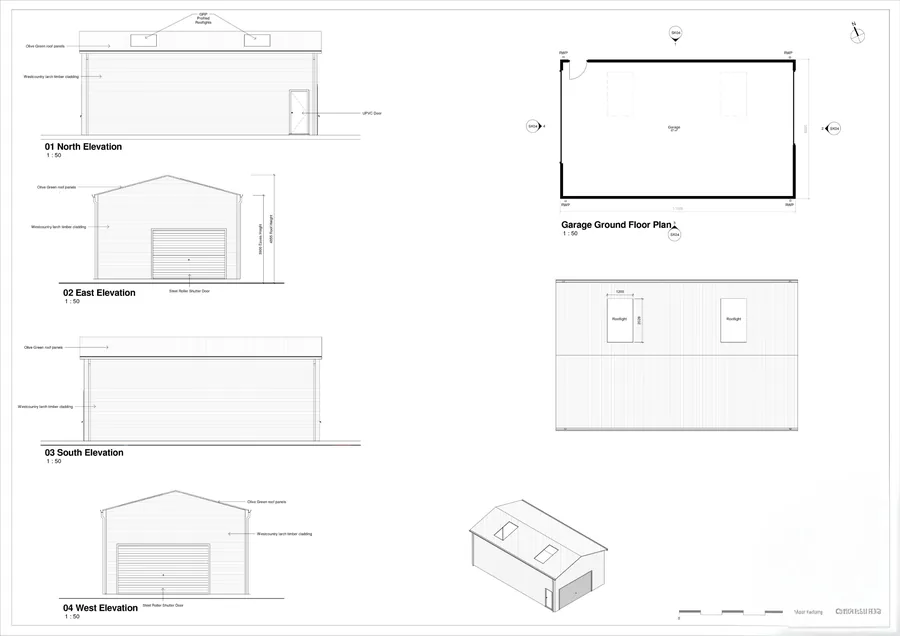

Projects
I cover a range of projects such as:
- Single storey rear extensions
- Side extensions
- Two storey and first floor extensions
- Front extensions and porches
- Loft conversions and dormers
- Garages and outbuildings
- Alterations to bungalows, cottages and older properties








